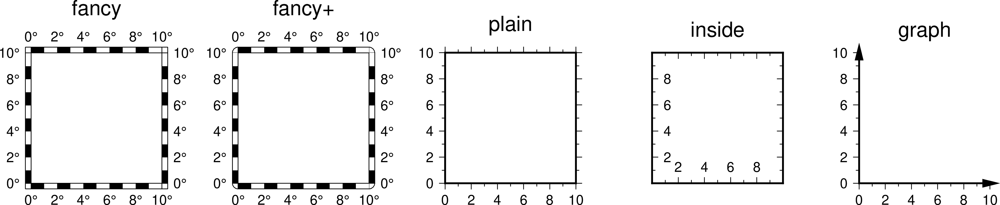
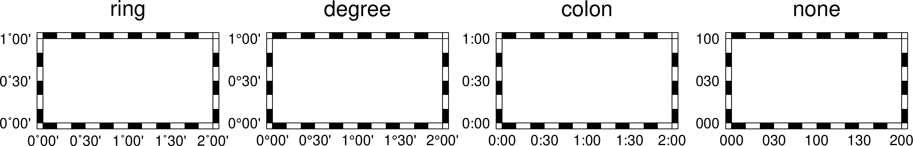
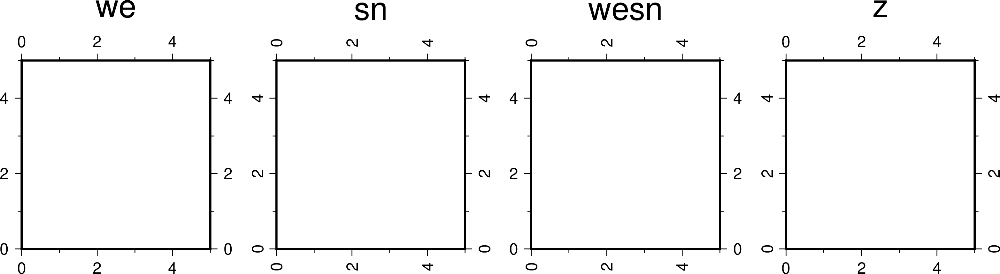
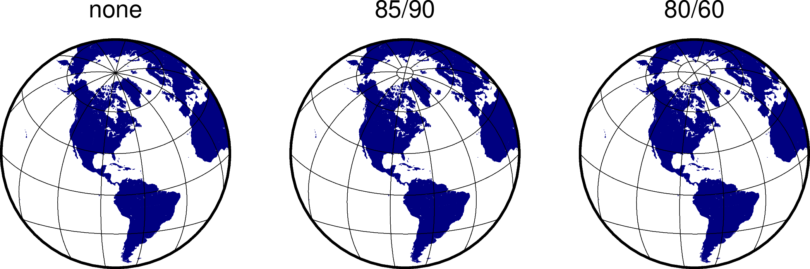

MAP參數¶
邊框相關參數¶
- MAP_FRAME_TYPE
底圖邊框類型 [fancy]
可選值包括
inside|plain|graph|fancy|fancy+。一般情況下，fancy邊框類型僅適用於投影后的X、Y方向平行於經度緯度方向的情況，比如rectangular投影、polar投影。對於某些投影，只能使用plain底圖，即便 MAP_FRAME_TYPE 被設置爲fancy。下圖給出了不同的底圖邊框類型的效果：
- MAP_FRAME_PEN
- 繪製底圖類型爲plain時邊框的畫筆屬性 [
thicker,black] - MAP_FRAME_WIDTH
- 設置底圖類型爲fancy時的邊框寬度 [
5p] - MAP_FRAME_AXES
要繪製/標註的軸 [
WSENZ]默認值爲
WSENZ，即2D底圖下繪製並標註四條邊，可以通過-B選項控制實際繪製的邊。詳情見 -B 選項 選項。
標註相關參數¶
- MAP_ANNOT_OFFSET
- 同時設置
MAP_ANNOT_OFFSET_PRIMARY和MAP_ANNOT_OFFSET_SECONDARY的值 - MAP_ANNOT_OFFSET_PRIMARY
- 一級標註的開始位置與刻度尾端間的距離 [5p]
- MAP_ANNOT_OFFSET_SECONDARY
- 二級標註的底部與secondary標註的頂部之間的距離 [5p]
- MAP_DEGREE_SYMBOL
在地圖上繪製“度”時所使用的符號 [degree]
可以取
ring|degree|colon|none。下圖給出了取不同值時的繪圖效果：- MAP_ANNOT_ORTHO
控制笛卡爾投影下哪些軸的標註垂直於軸 [
we]該參數可以將
wesnz做任意組合。下圖給出了取不同值時的繪圖效果：注解
此參數僅對笛卡爾投影有效。對於地理投影，可使用 MAP_ANNOT_OBLIQUE。
- MAP_ANNOT_OBLIQUE
控制傾斜投影下標註和刻度線的顯示
可以將如下任意幾個數字求和的結果作爲該參數的值：
1：當網格線穿過底圖邊界時添加標註，否則僅在上下邊界處標註經度，在左右邊界處標註緯度2：經度標註水平繪製4：緯度標註水平繪製8：傾斜的刻度線會擴展使得其長度等於指定刻度線長度16：忽略網格線與邊框的夾角，刻度線總是垂直於底圖邊框32：緯度標註平行於底圖邊框
- MAP_ANNOT_MIN_ANGLE
- 對於某些傾斜投影方式而言，如果標註的基線與地圖的邊界之間的夾角小於該值，則不繪製標註。合理的取值範圍爲0到90 [20]
- MAP_ANNOT_MIN_SPACING
- 在某些傾斜投影中，相鄰兩個標註之間的最小距離，若標註的距離小於該值，則不繪製 [0p]
標籤相關參數¶
- MAP_LABEL_OFFSET
- 軸標註底部與軸標籤頂部間的距離 [8p]
刻度相關參數¶
- MAP_TICK_PEN
- 同時設置
MAP_TICK_PEN_PRIMARY和MAP_TICK_PEN_SECONDARY的值 - MAP_TICK_PEN_PRIMARY
- 一級刻度的畫筆屬性 [thinner,black]
- MAP_TICK_PEN_SECONDARY
- 二級刻度的畫筆屬性 [thinner,black]
- MAP_TICK_LENGTH
- 同時設置
MAP_TICK_LENGTH_PRIMARY和MAP_TICK_LENGTH_SECONDARY的值 - MAP_TICK_LENGTH_PRIMARY
一級刻度的主刻度和次刻度的長度 [5p/2.5p]
若只給定一個長度值，則次刻度的長度假定爲主刻度的一半
- MAP_TICK_LENGTH_SECONDARY
二級刻度的主刻度和次刻度的長度 [15p/3.75p]
若只給定一個長度值，則次刻度的長度假定爲主刻度的25%
網格線相關參數¶
- MAP_GRID_PEN
- 同時設置
MAP_GRID_PEN_PRIMARY和MAP_GRID_PEN_SECONDARY的值 - MAP_GRID_PEN_PRIMARY
- 一級網格線的線條屬性 [default,black]
- MAP_GRID_PEN_SECONDARY
- 二級網格線的線條屬性 [thinner,black]
- MAP_GRID_CROSS_SIZE
- 同時設置
MAP_GRID_CROSS_SIZE_PRIMARY和MAP_GRID_CROSS_SIZE_SECONDARY的值 - MAP_GRID_CROSS_SIZE_PRIMARY
- 一級網格十字線的大小，0表示繪製連續的網格線 [0p]
- MAP_GRID_CROSS_SIZE_SECONDARY
- 二級網格十字線的大小，0表示繪製連續的網格線 [0p]
- MAP_POLAR_CAP
控制網格線在兩極附近的顯示 [
85/90]若取值爲
none，則表示不對極點附近的網格線做特殊處理。否則可以按<lat>/<dlon>格式取值，表示在-<lat>到+<lat>緯度範圍內正常繪製網格線；在大於+<lat>和小於-<lat>緯度區域內，則按照<dlon>指定的經線間隔繪製網格線。GMT會在<lat>緯度處繪製一個圈圈以分隔這兩個緯度區間。下圖展示了該參數取不同值時的繪圖效果：

標題相關參數¶
- MAP_TITLE_OFFSET
- 圖標題的底部與軸標註（或軸標籤）的頂部之間的距離 [14p]
- MAP_HEADING_OFFSET
- 子圖標題的頂部與圖總標題的底部之間的距離 [18p]
其它參數¶
- MAP_DEFAULT_PEN
設置所有與
-W選項相關的畫筆屬性的默認值 [default,pen]在參數值的前面加上
+可以覆蓋其他PEN相關參數中的顏色。- MAP_ORIGIN_X
- 新繪圖在紙張上的原點的X座標（僅適用於GMT經典模式）[72p]
- MAP_ORIGIN_Y
- 設置新繪圖在紙張上的原點的Y座標（僅適用於GMT經典模式）[72p]
- MAP_LOGO
是否在左下角繪製GMT時間戳 [
false]可以取
true|false，等效於在命令行中使用 -U 選項- MAP_LOGO_POS
- GMT時間戳相對於當前繪圖原點的對齊方式與位置 [
BL/-54p/-54p] - MAP_SCALE_HEIGHT
- 地圖比例尺的高度 [5p]
- MAP_LINE_STEP
繪製線段時所使用的最大步長 [0.75p]
地理投影下，兩點之間會用大圓路徑連接，因而GMT需要先計算大圓路徑上的其他中間點的座標，並將這些點用直線連起來。若該步長太大，會導致大圓路徑看上去很不光滑。
- MAP_VECTOR_SHAPE
矢量箭頭的形狀 [0]
可以取-2到2之間的任意實數。下面展示了取-2、-1、0、1和2時的矢量箭頭的形狀：